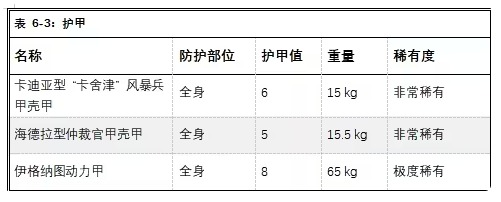
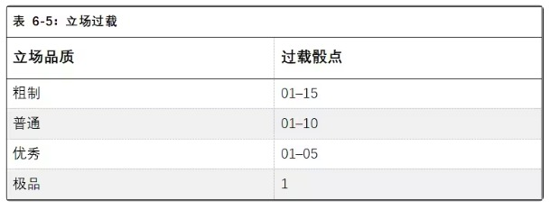
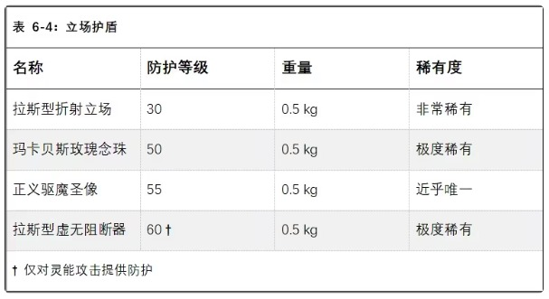

这些念刃保持悬浮状态，且必须处于在灵能者意志加值×5 米的范围内。灵能者可以通过自由动作将它们移动到该范围内的任何地方（但要合乎情理，因为念刃无法穿过固体）。在灵能者的回合内，灵能者可以花费一个部分动作使用一半的念刃进行攻击，或花费完整动作使用全部念刃攻击（如果选择后者，则他回合内无法再进行攻击）。攻击时，每片念刃都需要进行一次武器技能检定。使用者同时可以攻击多个目标，且在精准打击（called shots）仅受-10 的惩罚。
念刃的一大优势在于隐蔽性。它们可以编织进衣物、内嵌在装备中，或以其他巧妙方式伪装起来。任何用于发现隐藏念刃的搜索检定，难度都比正常情况高出 3 个等级。
神经手套是一种隐蔽但不失杀伤力的武器，深受刺客和拷问者的青睐。神经手套由柔韧的精金制成，每个指头上都装有神经毒素注射器。每个注射器都锋利异常，如钻石般坚硬，能够划破护甲，刺入下方那脆弱的血肉。
神经手套造成的伤口看似微小，却注入了刺客庭已知的最强烈的致残性毒素之一。
神经手套具有“淬毒”特性：若目标的坚韧检定失败，除承受常规伤害外，目标所有属性都会减半，持续在 1d5 分钟。这种特定效果不会叠加，对具有“恶魔”或“机械”特性的目标无效。
神经手套内的毒素可以替换为其他毒素（包括一种能模拟致幻手雷效果的毒素）。
动力桩是审判官军械库中另一种兼具象征意义与武器功能的物品。它外形为一根实心的冷锻铁桩，长约 1 米，一端逐渐收窄成锋利的尖刺，另一端为持握的手柄，内置动力场发生器。整个动力桩刻有数千个符文，用于对抗灵能者和抵御亚空间。猎巫人瑞克胡斯的动力桩是由瑞克胡斯审判官专门定制的武器，用于克制巫师和灵能者。实际上，他定制了数十根动力桩，这些武器已在他的许可下散布于整个卡利西斯星区，践行神皇的神圣使命。
若该武器击中拥有灵能等级的目标，目标每有 1 级灵能等级便额外承受 1d10 伤害（例如，灵能等级为 3 的目标会额外承受 3d10 伤害）。猎巫人瑞克胡斯的动力桩始终被视为“极品”品质武器，为使用者的武器技能检定提供 +10 加成，且伤害 +1，这些加成已包含在武器参数中。
镇暴盾是法务部的常见装备，但因为它在多种场合下表现出的实用性，许多其他组织和个人也纷纷设法获取此类装备。镇暴盾是一种大型盾牌，由厚重的陶钢板制成，足以保护盾后的持用者。镇暴盾不仅是防御壁垒，也能作为武器，每个镇暴盾的顶部都装有内置的弧光灯，中心设有强力电击板。当使用者用盾牌攻击时，可在撞击瞬间释放电击板的能量，造成一次强力的电击伤害。
镇暴盾具有“充能”特性，因为电击板需要时间积蓄能量，才能造成伤害。在充能回合中，镇暴盾仍可作为武器使用，但会失去“震击”特性，同时获得“原始”特性。镇暴盾需用一只手握持，为使用者的对应手臂和躯干提供 4 点护甲值，这些护甲值在盾牌充能时不会变为“原始”特性。
法务部的镇暴盾在上角设计有锁定握把，使用者可无惩罚地用单手发射一把基础武器。
十字军型镇暴盾专为对抗邪恶势力和亚空间造物而设计，表面刻有六芒星护符，在抵御直接影响自身的灵能时，使用者能获得+ 20 的检定加成。此外，十字军盾牌在抵御造成伤害的灵能攻击时，提供 2 倍护甲。在抵御具有 “亚空间武器” 属性的攻击时，十字军盾牌仍能正常提供护甲。

授予审判庭王座特工的护甲来源繁杂，既有来自帝国各武装组织的藏品，也有位高权重的审判官专门定制的装备。通常而言，这类护甲的设计不仅要保护穿戴者的身体，更要守护穿戴者的灵魂。
长期以来，卡利西斯星区的军务部为风暴兵单位配备卡迪亚型甲壳甲。卡迪亚是帝国至关重要的要塞世界，因此，军务部认为，卡迪亚采取的设计本身就具有潜在的推荐价值。风暴兵是多才多艺的精英士兵，他们的护甲也必须同样兼收并蓄。
“卡舍津”甲壳甲是一套全身护甲。它配备有集成鸟卜仪，可通过手腕显示器和重力伞的附件访问。甲壳头盔装有循环呼吸器、成像目镜、加密通讯微珠，头盔侧面可附有照明灯组或图像记录仪。这些系统由一个小型能量单元供电，大小和成本与激光枪充电包相当，连续使用一周后必须更换。
法务部轻甲壳甲采用了哑光黑与红的配色，辨识度极高且极具威慑力，法务部仲裁官的护甲更是如此。仲裁官护甲的设计目的是彰显《帝国法典》执行者的权威，令罪犯和不满者心生畏惧。
海德拉型仲裁官甲壳甲采用与法务部常规甲壳甲相同的基本样式，但增加了风暴外套，顶部饰有巨大金鹰的头盔。
仲裁官甲壳甲的头盔配备有集成的加密通讯微珠、高质量的成像目镜（使装备者具备“黑暗视觉”特性，并免疫闪光手雷的效果），以及扩音器（允许使用者将声音放大到近乎震耳欲聋的程度）。肩甲上还可安装一个小型战术光源。这些系统由一个小型能量单元供电，大小和成本与激光枪充电包相当，可以连续使用一周。
尽管伊格纳图动力甲不如星际战士的动力甲坚固，但它要比那些卖给贵族和企业的护甲要先进得多。伊格纳图动力甲由技艺精湛的机械神教工匠制造，专门供给审判庭王座特工装备。许多好战的审判官会穿戴伊格那图斯动力甲，用陶钢保护身体，正如他们用信仰守护灵魂一样。
和所有动力甲一样，伊格纳图动力甲由厚实的陶钢板与复杂的仿生肌肉电纤维巧妙地结合而成，能增幅穿戴者的行动与力量。这项技术极为神奇，穿戴动力甲的人在行动作战时仿佛毫无负重，护甲的增强系统会完全抵消护甲本身的重量与庞大体积带来的影响。
伊格纳图动力甲具有以下效果：
·伊格纳图动力甲配有可拆卸的头盔，头盔内置优秀级别的成像目镜（为使用者提供 “黑暗视觉” 特性，并免疫闪光手雷的效果）、微型通讯器以及集成鸟卜仪。这些设备可通过与护甲的机魂对话来操控，若使用者配备有脑接插头、MIU 接口或类似装置，也能直接与护甲进行连接交互。
·头盔装配到位后，整套护甲便具备了独立的生命维持系统，能让使用者无视有毒大气与气体的影响，甚至在水下或真空中存活。只要护甲有电力供应，该系统就能持续运作。
·只要使用者穿戴除头盔外的整套护甲，就能获得+20 的力量加成和 +1 移速。
·只要至少穿戴胸甲、背包与护腿，使用者的体型就会提升一个等级（参见《黑暗异端规则书》第 332 页）。
·护甲配有集成的背包式电源，在持续作战行动中可维持五天的电力（若动力甲不用于作战，电源续航时间会大幅延长）。一旦护甲断电，就会变成禁锢使用者的坟墓，使用者哪怕只是移动，都必须通过一个极难（-60）的力量检定。不过，头盔的机魂会在断电前自动开启外部通风口，确保使用者不会窒息。
最早的动力甲可追溯到帝皇收复银河系的大远征时期，许多动力甲被保养了数百年乃至上千年之久，它们不仅是盔甲，更是宗教圣物。伊格纳图动力甲也不例外，这类动力甲常镶嵌着宗教纹饰、刻有神圣的守护符文，或是内置了精密的防护系统。

伊格纳图动力甲通常会镶嵌六芒星护符。镶嵌六芒星护符会使动力甲的稀有度提升一个等级。六芒星护符能让使用者在抵抗灵能或灵能攻击的所有检定中获得 + 20 的加成，在防御造成直接伤害的灵能攻击时提供 2 倍护甲。
尽管个人护甲的优势毋庸置疑，但王座特工并非能在任何情况都身着全套战斗装备。与此同时，还有无数新武器被设计出来，以击穿最为牢固的动力甲。
立场护盾提供的防护则达到了完全不同的层级，兼具两项优势：体积小巧且易于隐藏，同时又能够抵御强大的攻击。每一个立场护盾都是一件圣物，即便没有千年也有数百年的历史，技术神甫极难复刻这些造物。因此，只有最受重视的帝国军官才能获得立场护盾，例如帝国卫队军官、星际战士战团长以及神圣审判庭的资深成员。
无论一个角色装备了多少种不同的立场，他一次都只能从一种立场中获益。当穿戴激活状态立场的角色受到攻击时，掷一次 d100。若结果小于或等于该立场的防护等级，此次攻击将被无效化，不会对受保护的角色造成任何影响（不过，该攻击可能会对角色周围的环境或附近其他角色产生影响，例如带有“爆炸”特性的武器）。
立场也可能过载。将用于规避伤害的百分骰结果与下方表格进行比对。若结果小于或等于表格中列出的数值，立场即会过载并停止运作，直至重新充电或修复（这需要 “线圈充能”天赋，或通过一次艰巨（-30）的“技术应用”检定）。
值得信赖的高阶王座特工能使用拉斯型折射立场。这种折射立场的体积约等于手枪弹匣，能将攻击能量分散到立场效应的整个区域。在激活时，拉斯型折射立场会在使用者周围形成一层朦胧的光晕，因此，使用者极易在昏暗环境或夜间中暴露。
玫瑰念珠不仅是立场装置，更是帝国信仰的象征，通常只交付给国教中的最高级官员。它外形呈方形，是由精金或其他高密度耐用金属制成的风格化十字架，中心镶嵌着宝石或国教徽记，通常以念珠或绶带系于颈间或腰间。其内部藏有一套强大的立场装置。
玛卡贝斯型玫瑰念珠得名于它的构造，每件玛卡贝斯型玫瑰念珠内都包含一小块来自玛卡贝斯圣殿世界的基岩石片。
与折射立场不同，玛卡贝斯型玫瑰念珠不会持续散发光晕，但它会将吸收的部分能量转化为可见光，在吸收攻击时会火光迸溅。此外，玛卡贝斯型玫瑰念珠作为神圣象征，绝不容许邪恶的人类之敌触碰——若由混沌势力的仆从、恶魔、异形或异端持有，只要骰出 20 或更低的数值，玛卡贝斯型玫瑰念珠就必然会过载。
与玫瑰念珠一样，正义圣徽既是强大的立场装置，也是恶魔审判庭的象征。它们被授予审判庭中最资深的恶魔猎手，辅助他们完成任务。这类圣徽的造型通常融入审判庭徽记的元素，也有小型战锤与帝皇圣像的造型。
每一件正义圣徽都设有针对恶魔的守护结界与神圣护盾，这股强大的神圣之力足以让邪恶望而却步，不敢触碰圣徽所生成的立场。当具有“恶魔”特性的生物攻击正义圣徽的佩戴者时，它的攻击会受到 -10 的惩罚。

拉斯型虚无阻断器外表像是不起眼的黯黑色小盒子，实际是使用具有灵能惰性的陶钢制成，内部装有精密电路，能在一定程度上模拟不可接触者的效果。拉斯型虚无阻断器通常会被装配审判庭成员，用于抵御灵能者与亚空间生物的攻击。虚无阻断器可装备于颈部或固定在护甲上，但只能为一人提供防护。
虚无阻断器的运作方式与其他立场类似，但立场效果仅适用于灵能攻击。当佩戴者直接受到灵能影响时，他可以进行立场豁免检定。若检定成功，该灵能对他无效。当然，如果灵能造成的是间接攻击，比方说从高处用遥感灵能朝佩戴者投掷一块巨石，那么虚无阻断器将无法提供保护。
王座特工能够接触到众多奇特或古老的装备。这些装备可能来自审判庭、泰拉政府，甚至是一些不太知名的教派与组织，往往能够助力王座特工的事业。
尽管只有审判官能携带审判庭玫瑰结，但卡利西斯密会有个惯例，即审判官会向王座特工亲信发放职权徽章，表明这些王座特工是在神圣审判庭的授权下执行任务。依据保密性与隐蔽性的需求不同，职权徽章会有多种形式，可以是带有基因编码和身份证明的实体徽章，可以是隐藏在手臂或躯干上的电子纹身，甚至是灵能刻印在王座特工脑中的信息。无论如何，这些权力象征都难以伪造，更难以辩驳。
无论何种形式的职权徽章，都能证明持有者是神圣审判庭的王座特工，并享有相应的权利与职责，但它并非正式审判官的玫瑰结。王座特工获得职权徽章时，必须选择徽章的具体形式。
弹药包/能量包的设计目的是：在长期任务中（或使用者不想在装弹上浪费时间时），为单兵武器提供额外弹药。这种背挎式能量包的穿戴方式与普通背包相同，但标准承载能力仅为普通背包的一半，另一半空间被用于储存弹药。储存的弹药因武器类型而异，能量武器储存的是额外能源包，火焰武器储存的是大型钷素燃料罐，而实弹武器则会储备大量的爆弹或伐木枪弹药。无论使用哪种武器，弹药包/能量包的输弹管线/电缆会直接将使用者的武器与储备弹药相连。
弹药包/能量包会取代远程武器的标准弹容。大多数手枪、基础武器和便携式重武器都能使用这种背包，但也有例外。例如，大多数掷弹筒的弹药体积过大、过于笨重，无法通过输弹管线供应；而像便携式激光炮（lascannons）这类威力极强的重武器，只能用最大最先进的背挎式能量包供能，其他能量包只能支持它一次射击的消耗。
弹药包/能量包的弹容取决于所用弹药类型：背包式能量包可为激光武器提供 300 发弹药（但高耗能的地狱枪和地狱手枪除外，它们每发射一次消耗 2 发能量）；可为等离子武器和热熔武器提供 80 发；为爆弹武器和实弹武器提供 200 发弹药；为火焰武器提供 60 发弹药。
在帝国，利用技术改造（或修复）人体的做法十分常见，因此，脑接插头及类似装置在帝国内相当普及。脑接插头通常被植入颅骨内，通过数十根导线和电极与大脑相连，导线连接的另一端就是实际的“插头”，可连接多种设备。
脑接插头能让使用者直连需要脑机接口的设备，除此之外并无其他加成。大多数电子设备可改装为适配脑接插头的版本，让使用者无需双手便可操作它们。（这类设备通常包括扫描仪及其他扫描装置、沉思者，或是程序简单的机仆）
在空降突击中，帝国卫队首先使用重力伞来部署精锐部队。重力伞是一种类似背包的穿戴式设备，两侧装有反重力发生器。尽管这些发生器的功率有限，不能像真正的跳包一样让使用者飞行，但能在大多数情况下，将坠落的速度减缓至人类可以存活的水平。一把重力伞的能量储备通常仅可供应一次跳伞所需，需要充电后才能再次使用。
重力伞通常预设在距地数百米时展开。使用时需掷 1d10，若结果为 1，则重力伞未能展开。使用者可进行一次普通（+10）的敏捷检定，来够到应急展开装置，手动激活重力伞。在进行此次检定时，使用者会额外坠落 100 米。
一旦重力伞激活，使用者会相对缓慢地落向地面，但在此期间，他会漂浮在空中，视作为一个“无助目标”。重力伞需要至少 50 米的高度才能展开，并将使用者的速度减缓至可以存活的水平。
哨兵阵列是一种高度先进的传感器组件，整合了运动追踪器、热传感和目标捕获系统。作为古老科技的结晶，哨兵列阵只有标准背包大小，背挎时会在使用者肩头上方延伸出数个天线和透镜观测器。
哨兵阵列所提供的海量信息无法在简单的屏幕上显示，必须通过脑接插头直接上传至使用者的大脑。这种上传形式必然存在着风险，过载的数据可能会冲击使用者的大脑。然而，那些能够驾驭哨兵阵列
的人，能异常敏锐地感知周围环境的变化，甚至能够穿透固体追踪目标，远超出一般扫描仪所具备的功能。
哨兵阵列必须背在背上，且使用者必须配备脑接插头、MIU 接口或其他可让阵列直接与大脑连接的类似装置。为了激活哨兵阵列，使用者必须立即进行一次普通（+10）的意志检定。若检定失败，使用者会受到 1d5 级的虚弱，但依然能激活哨兵阵列。
哨兵阵列的电源可支持它连续工作 10 小时。连接哨兵阵列后，使用者的察觉检定获得+30 加成，拥有范围为 50 米的“超自然感官”，能够 “看见” 各个方向，还可探测墙壁、灌木丛、树木或其他障碍物之后的目标，但至少 1 米厚且无缝隙的实心墙壁会阻挡阵列的探测。使用者还可以花费一个部分动作，通过哨兵阵列 “锁定” 特定目标（他也可以事先将特定的生物特征输入哨兵阵列，哨兵阵列会自动锁定目标）。哨兵阵列可追踪 100 米范围内的目标，且始终能将目标与其他事物区分开来。
自动瞄准镜在帝国中极为罕见，仅供精锐部队使用。这种枪用瞄准镜内置高灵敏度的生物探测器和小型计算器，与所装配的武器直接相连。当武器瞄准被识别为盟友的目标时，瞄准镜会阻止武器开火，从根本上避免使用者在混战中误伤战友。
自动瞄准镜最多可录入 10 名盟友的生物特征数据（录入过程需 10 分钟，并需通过一次常规（+20）的技术应用检定）。录入盟友数据后，装配该瞄准镜的武器将无法向该盟友开火——即便是直接瞄准，武器也不会射击。当使用者向这些盟友的近战区域开火时，使用者的 BS 检定不会受到任何惩罚，且武器射出的子弹绝不会击中任何已录入数据的目标。
自动瞄准镜属于瞄准镜类配件，一把武器只能装配一个瞄准镜。任何手枪、基础武器或重武器均可装配自动瞄准镜，前提是该武器不具备火焰、爆炸或类似特性。
安装自动瞄准镜需通过一次困难（-10）的技术应用检定，且耗费 1 小时来对武器进行一系列改装，包括连接导线、建设电路等。